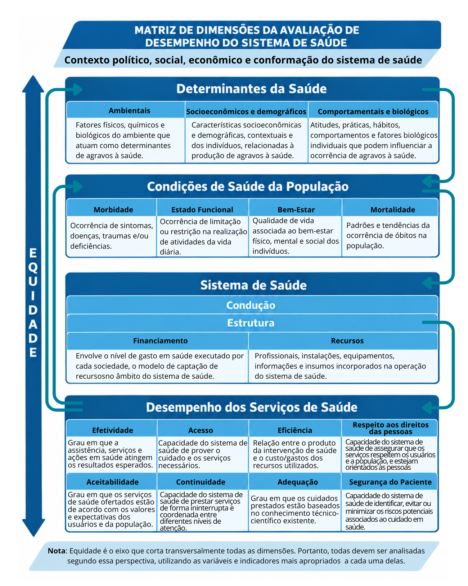

Módulo 2 | Aula 1
Equidade e Determinantes
da Saúde
Modelos de determinação (Proadess, 2012)
Existem diferentes modelos e marcos conceituais que buscam analisar a determinação da saúde. Eles têm como características importantes o reconhecimento da importância do contexto e a capacidade dos ambientes social, econômico, cultural e físico para modificar a relação entre a saúde e as características individuais e da complexidade das interações entre vários determinantes da saúde. Além disto, colocam as atividades (e as demandas por recursos) do sistema de saúde em uma perspectiva mais equilibrada, retirando-o do centro do palco e dando mais importância não ao modo como as pessoas adoecem, mas às razões delas adoecerem.
Os diversos modelos reconhecem que as desigualdades em saúde são socialmente produzidas e que grupos mais vulneráveis têm sua saúde mais comprometida em função da exposição a fatores diversos relacionados às dinâmicas sociais e ambientais.
No Proadess, os determinantes da saúde são categorizados em três subdimensões: ambientais; socioeconômicos e demográficos; e comportamentais e biológicos.

Os determinantes ambientais são os fatores físicos, químicos e biológicos do ambiente que atuam como determinantes de agravos à saúde. Envolvem, por um lado, o acesso a bens públicos relacionados ao saneamento ambiental, por outro lado, todos os padrões e mudanças ambientais, como as chuvas, secas, enchentes e alagamentos, calor excessivo, entre outros elementos, que têm impactos sobre a saúde dos indivíduos e comunidades.
As principais fontes de informações para a construção de indicadores relacionados aos determinantes ambientais são as pesquisas domiciliares. No caso do Brasil, das Grandes Regiões e dos Estados podem ser utilizadas informações anuais da Pesquisa Nacional por Amostra de Domicílios (PNAD) e a Pesquisa Nacional de Saúde (PNS), que deveria ser realizada a cada cinco anos pelo IBGE, mas teve edições em 2013, 2019 e 2026. Já para as outras abrangências geográficas (Macrorregiões, Regiões de Saúde e Municípios), que dependem das informações municipais ou da agregação destas, a principal fonte são os Censos Demográficos, ou seja, só são possíveis indicadores no mínimo a cada dez anos. Em função das principais fontes, os principais indicadores são: Abastecimento adequado de água (cobertura dos serviços de abastecimento adequado de água da população, por meio de rede geral de distribuição); Coleta adequada de lixo referida (cobertura populacional de serviços regulares de coleta domiciliar de lixo); Disposição adequada do esgoto sanitário referida (cobertura populacional da disposição adequada do esgoto sanitário, através de rede coletora ou fossa séptica).
Outros indicadores de interesse estariam relacionados às mudanças climáticas, eventos extremos, à poluição do ar e à qualidade da água em seus impactos sobre a saúde. Porém, o caráter assistemático das fontes de informação sobre alguns destes aspectos, além da própria dificuldade em estabelecer delimitações espaciais baseadas em abrangências geográficas, dificulta a construção de mais indicadores.
Para mais informações e indicadores sobre ambiente, clima e saúde, consulte o Observatório de Clima e Saúde.
Os determinantes socioeconômicos e demográficos são características socioeconômicas e demográficas, contextuais e dos indivíduos, relacionados à produção de agravos em saúde. Renda, escolaridade, inserção laboral, características populacionais por sexo e idade, distribuição espacial da população, cor/raça e etnia, além de desigualdades são elementos relacionados a agravos em saúde e a seus desdobramentos.
As principais fontes de informações sobre determinantes socioeconômicos e demográficos também são as pesquisas domiciliares. Para as escalas espaciais mais abrangentes (Brasil, Grandes Regiões e Estados) são possíveis dados de pesquisas amostrais como a Pesquisa Amostral por Amostra de Domicílios (PNAD) e a Pesquisa Nacional de Saúde (PNS). No caso dos municípios e das abrangências que dependem dos dados municipais (Macrorregiões e Regiões de Saúde), há uma dependência exclusiva do dado censitário, o que explicita a importância do Censo Demográfico para escalas espaciais mais restritas.
É fundamental destacar também as informações socioeconômicas e demográficas obtidas através dos Sistemas de Informações em Saúde: do recém-nascido e da mãe no Sistema de Informações sobre Nascidos Vivos (SINASC), das pessoas internadas através do Sistema de Informações Hospitalares (SIH), das pessoas diagnosticadas com agravos de notificação no Sistema de Informação de Agravos de Notificação (SINAN) e das pessoas que faleceram a partir do Sistema de Informação sobre Mortalidade (SIM).
Os principais indicadores socioeconômicos e demográficos vinculados à determinação da produção de agravos e seus desdobramentos são: analfabetismo, escolaridade, média de anos de estudo no que tange à educação; distribuição por cor/raça da população; índice de envelhecimento, razão de dependência, razão de sexos, esperança de vida ao nascer e densidade demográfica em relação às características da população; renda média domiciliar per capita, pobreza, índice de Gini e razão de renda como indicadores relativos à distribuição da renda e suas desigualdades; além da formalidade do emprego e taxa de desemprego relativos à inserção laboral.
Para mais informações e indicadores sobre características sociais, econômicas e demográficas, consulte o site do Ipeadata.
Os determinantes comportamentais e biológicos estão relacionados a atitudes, práticas, crenças, comportamentos e fatores biológicos individuais que condicionam, predispõem ou influenciam a ocorrência de agravos à saúde. Embora individuais, se caracterizam por estarem relacionados a diferentes grupos populacionais, o que afeta distintamente a produção de agravos em saúde.
As pesquisas amostrais são as principais fontes de informações sobre determinantes comportamentais e biológicos, portanto não permitem a construção de indicadores para abrangências espaciais mais restritas (Macrorregiões de Saúde, Regiões de Saúde e Municípios). Para Brasil, Grandes Regiões e Estados há dados da Pesquisa Nacional de Saúde (PNS) e do inquérito Vigitel: Vigilância de Fatores de Risco e Doenças Crônicas por Inquérito Telefônico. Esta última fonte é um inquérito por telefone realizado nas capitais estaduais, com a premissa de que representam os estados, regiões e conjunto do país, o que configura uma limitação do uso de suas informações, embora sua periodicidade seja mais vantajosa em comparação à PNS.
Os principais indicadores comportamentais e biológicos envolvem a distribuição percentual de informações autorreferidas sobre o Excesso de Peso, Inatividade Física, Tabagismo e Ingestão Abusiva de Álcool. Padrões alimentares da população também constituem indicadores relevantes com informações da PNS sobre o consumo de determinados alimentos (frutas, verduras, feijão, proteínas, entre outras), além de hábitos alimentares como consumo de ultraprocessados e substituição de refeições por lanches.
Veja um quadro com resumo das principais fontes e indicadores de Determinantes da Saúde:
| Determinantes | Principais fontes de dados | Principais indicadores utilizados |
|---|---|---|
| Ambientais |
|
|
| Socioeconômicos e Demográficos |
|
|
| Comportamentais e Biológicos |
|
|
Fonte: Elaboração dos autores.